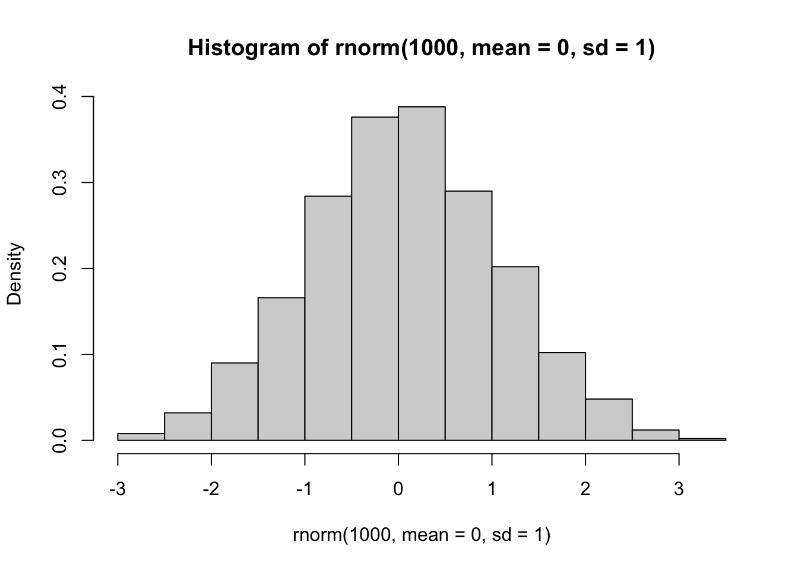
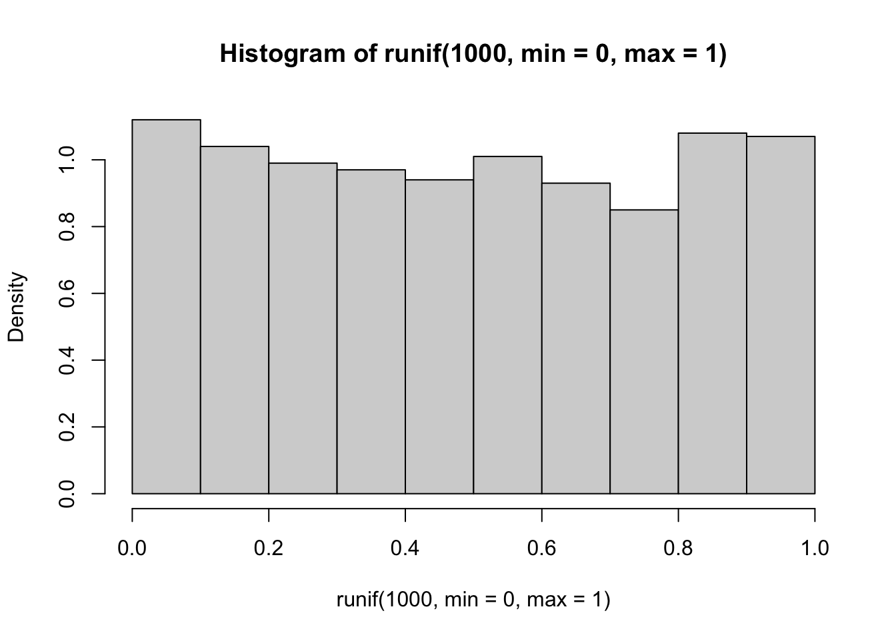
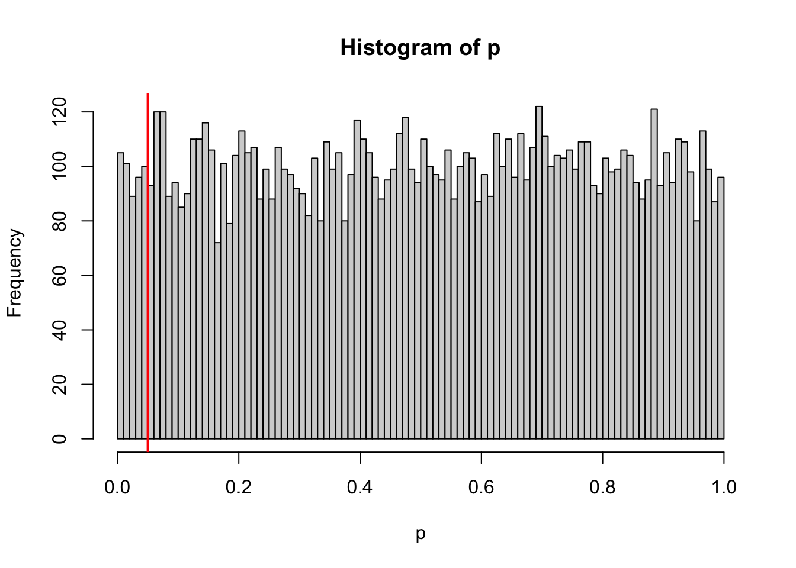

sample() and rnorm(). These are two
examples of functions that help you generate random numbers from some
probability distributoin. But if you think about it, there is an
infinate number of ways to sample a random set of numbers1. Understanding these
functions can be really useful in crafting randomization tests,
bootstrapping, and simulations.
Let’s consider some options:
We often want to generate a set of random number given some distribution. Say, for example, we want to sample randomly from a set of numbers. For example, let’s sample 5 integer between 1 and 10.
sample(1:10, 5, replace=F) #5 random numbers between 1 and 10## [1] 2 9 1 3 6You will probably notice that you have generated a different
set of random numbers than what is shown here. This makes sense, but it
makes it difficult to make this code reproducible. What we can
do is to use set.seed() to make this process
repeatable:
set.seed(2) #you can put whatever number inside set.seed()
sample(1:10, 5, replace=F) #5 random numbers between 1 and 10s## [1] 5 6 9 1 10When you run the code like this, you should always get “2, 7, 5, 10,
6”
Try changing the number inside the set.seed() and see what
you get.
Note that we have used replace=F to
indicate that, once we choose a number, we want to avoid choosing it
again. This is akin to physically picking 5 cards out of a set of 10 at
the same time. We can do that up to the sample size, but no more. So,
this will work:
set.seed(2)
sample(1:10, 10, replace=F) #10 random numbers between 1 and 10## [1] 5 6 9 1 10 7 4 8 3 2But this will NOT work:
sample(1:10, 11, replace=F) #11 random numbers between 1 and 10## Error in sample.int(length(x), size, replace, prob): cannot take a sample larger than the population when 'replace = FALSE'In the first iteration, you have simply shuffled the order of the numbers. But you cannot shuffle 11 cards out of a deck of 10.
Compare this to the case when we set replace=TRUE:
set.seed(2)
sample(1:10, 10, replace=T) #10 random numbers between 1 and 10## [1] 5 6 6 8 1 1 9 2 1 3You will notice that we have chose some numbers multiple times (“2”
appears three times, “10” and “6” appear twice). When you set
replace=TRUE, we are basically simulating a situation where
we choose a card, write down the number, and then put it
back before picking up another card. This process is the
essence of a simulation procedure called
bootstrapping.
A quick recap:
sample(x, n) allows you to randomly sample n
numbers from the set x.replace=F (default) means once you sample one number,
you will not sample it again. You can use this to shuffle the order of
numbers (generally called randomization)replace=T allows for sampling a number more than once.
You can use this to resample a set of numbers with equal probability
(generally called bootstrapping)Rather than sampling from a discrete set of numbers, we might want to sample numbers from a given hypothetical distribution. As an illustration, let’s sample a set of 100 numbers from a normal distribution with mean of 0 and standard deviation of 1
set.seed(2)
rn=rnorm(10, mean=0, sd=1)
rn## [1] -0.89691455 0.18484918 1.58784533 -1.13037567 -0.08025176 0.13242028
## [7] 0.70795473 -0.23969802 1.98447394 -0.13878701You can see that it generates numbers with 8 digits. We can generate
a histogram and check to see if the output of the
rnorm() function really looks like a normal distribution.
Let’s do it with 1,000 numbers so that we reduce sampling error.
set.seed(2)
hist(rnorm(1000, mean=0, sd=1), freq=F)
Looks about right.
Now let’s try the same thing but with a uniform distribution of numbers ranging from 0 to 1
set.seed(2)
runif(10, min=0, max=1)## [1] 0.1848823 0.7023740 0.5733263 0.1680519 0.9438393 0.9434750 0.1291590
## [8] 0.8334488 0.4680185 0.5499837hist(runif(1000, min=0, max=1), freq=F)
We can use the rbinom() function to simulate coin-flips,
i.e., generating 0s and 1s randomly.
set.seed(2)
coin=rbinom(100, 1, prob=0.5) #100 trials of a single flip of the coin
coin## [1] 0 1 1 0 1 1 0 1 0 1 1 0 1 0 0 1 1 0 0 0 1 0 1 0 0 0 0 0 1 0 0 0 1 1 1 1 1
## [38] 0 1 0 1 0 0 0 1 1 1 0 1 1 0 0 1 1 0 1 1 1 1 1 1 1 1 0 1 0 0 0 0 0 0 0 0 0
## [75] 0 1 0 1 0 1 0 1 0 0 0 1 1 0 1 0 1 0 0 1 0 0 0 0 0 0table(coin) #generate a table of results## coin
## 0 1
## 55 45sum(coin)/length(coin) #calculate probability of 1## [1] 0.45set.seed(2)
flip=100
coin4=rbinom(100, 1, prob=0.25)
table(coin4)## coin4
## 0 1
## 72 28set.seed(2)
flips=100
coin2=rbinom(10, flips, prob=0.5)
coin2## [1] 48 47 59 45 46 54 50 58 58 52| Distribution | Function to generate numbers |
|---|---|
| Beta | rbeta() |
| Binomial | rbinom() |
| Chi-square | rchisq() |
| Exponential | rexp() |
| Gamma | rgamma() |
| Geometric | rgeom() |
| Logistic | rlogis() |
| Log Normal | rlnorm() |
| Negative Binomial | rnbinom() |
| Normal | rnorm() |
| Poisson | rpois() |
| Uniform | runif() |
| Weibull | rweibull() |
sample()sample() and
set.seed()Now that we’ve run through the basics of “apply” functions and
for-loops, let’s try using it to start building the basics of
simulations. To do this, we will combine apply and/or loops with the
super useful function: sample(). Let’s generate a random
sequence of integers from 1 through 10, and do that 5 times. We will
store the result of each iteration in a column of a matrix (the final
matrix should be 10 rows of 5 columns).
times=5
m=matrix(nrow=10, ncol=times)
for (i in 1:times){
m[,i]=sample(1:10, 10, replace=F)
}
m## [,1] [,2] [,3] [,4] [,5]
## [1,] 6 6 2 8 7
## [2,] 9 3 3 4 2
## [3,] 8 1 4 5 6
## [4,] 4 7 9 6 10
## [5,] 3 5 1 10 4
## [6,] 1 10 6 9 8
## [7,] 2 2 5 2 5
## [8,] 5 4 7 1 1
## [9,] 7 9 8 7 9
## [10,] 10 8 10 3 3Now, if you actually did this, you will see that you got a
different result than I did! This is because the
sample() function gives you a different set of results each
time you run it.
If you want reproducible results with randomization procedures like
sample(), you can use a function called
set.seed(). You can put in a number inside this
function–and each time you use the same number, you should get the same
result. Try running this code:
set.seed(2)
times=5
m=matrix(nrow=10, ncol=times)
for (i in 1:times){
m[,i]=sample(1:10, 10, replace=F)
}
m## [,1] [,2] [,3] [,4] [,5]
## [1,] 5 1 6 6 9
## [2,] 6 3 9 2 1
## [3,] 9 6 10 7 2
## [4,] 1 2 5 9 4
## [5,] 10 9 8 3 5
## [6,] 7 10 3 4 6
## [7,] 4 7 1 10 7
## [8,] 8 5 7 1 8
## [9,] 3 4 2 5 10
## [10,] 2 8 4 8 3Now, you should have gotten the exact same results as shown here!
Mini-exercise: What do you think this code will
produce (note where I put the set.seed()
function)
times=5
m=matrix(nrow=times, ncol=10)
for (i in 1:times){
set.seed(2)
m[i,]=sample(1:10, 10, replace=F)
}
mYou can do the same thing with an sapply function. Here,
if you are going to repeat a set of codes 5 times, just put
1:5 as the input to the sapply() function:
set.seed(2)
sapply(1:5, function(x){
sample(1:10, 10, replace=F)
})## [,1] [,2] [,3] [,4] [,5]
## [1,] 5 1 6 6 9
## [2,] 6 3 9 2 1
## [3,] 9 6 10 7 2
## [4,] 1 2 5 9 4
## [5,] 10 9 8 3 5
## [6,] 7 10 3 4 6
## [7,] 4 7 1 10 7
## [8,] 8 5 7 1 8
## [9,] 3 4 2 5 10
## [10,] 2 8 4 8 3If you used the same set.seed(2) command, you should see
that you get the same result!
Let’s use the for loop to illustrate a statistical paradigm: the p-value. The p-value is the probability of obtaining a result if the null hypothesis is true. Let’s investigate this case for the p-value generated from a Pearson’s correlation coefficient.
Let’s start by testing the correlation between two random sets of
values drawn from normal distributions. You can do this by using the
functino rnorm(). By default, this will pull X number of
values from a normal distribution with mean = 0 and sd = 1. But you can
set the mean (and sd) to be something different:
rnorm(10, mean=10)## [1] 8.274020 9.097416 9.440938 9.753487 9.616414 8.040897 9.158295
## [8] 11.903547 10.622494 11.990920Use this to generate two distributions with the same mean. Then, do a t-test:
set.seed(2)
r1=rnorm(100, mean=10)
r2=rnorm(100, mean=10)
test=t.test(r1, r2)
test##
## Welch Two Sample t-test
##
## data: r1 and r2
## t = -0.39361, df = 192.94, p-value = 0.6943
## alternative hypothesis: true difference in means is not equal to 0
## 95 percent confidence interval:
## -0.3601323 0.2403067
## sample estimates:
## mean of x mean of y
## 9.969302 10.029215It’s easy to extract the P-value from a t-test:
test$p.value## [1] 0.6943067What we have done is see if two sets of random numbers are correlated. As expected, there is no significant difference in the means.
However, what if we did this test a bunch of times? We should get a “significant correlation” (P<0.05) 5% of the time. Let’s try this and see if that’s true. What we can do is to repeat the above routine a large number of times (here, 10,000x) and ask how often the p-value from that test is less than or equal to 0.05. Let’s run the loop and store the p-values.
times=10000
set.seed(2)
p=vector(length=times)
cor.coefs=vector(length=times)
for(i in 1:times){
r1=rnorm(100)
r2=rnorm(100)
test=t.test(r1,r2)
p[i]=test$p.value
}Now let’s visualize the p-values we generated as a histogram, with a red line where P=0.05 is.
hist(p, breaks=100)
abline(v=0.05, col="red", lwd=2)
So, in theory, about 5%, or 10,000 x 0.05 = 500 of these values should be <=0.05. Let’s see if that’s right:
length(which(p<=0.05))## [1] 491You should have a value close to 500. That is, if you repeat the test 10,000 times on two random sets of numbers, you will get a ‘significant’ result 500 times.
This is a statistical cautionary tale–Even when we set up two fictional distributions to have the same mean and variance, you will get a “significant difference” in their means 5% of the time if you are using P < 0.05 as the criterion for “significance”.
Strictly speaking, we can only generate pseudo-random numbers–the computer can use an algorithm that generates numbers that are indistinguishable from random, but it is not truly random as long as we are using some algorithm to generate it.↩︎